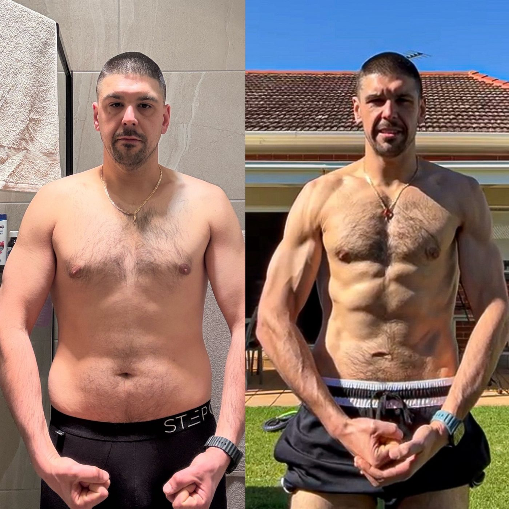

BeforeAfter
RiccardoOwner, Marino Meats · Seven-figure business · 8 months
95 kg → 77.8 kg
~25% → ~10%Body fat
17.1 kgLost
8 months
- Before95 kg at around 25% body fat. Running a seven-figure business.
- ConstraintThe business and the family come first. The strategy had to fit around both.
- Result77.8 kg at around 10%. 17.1 kg lost in eight months.
- Beyond thatMore energy. More patience with his kids. Better decisions at work. Comfortable with his shirt off.